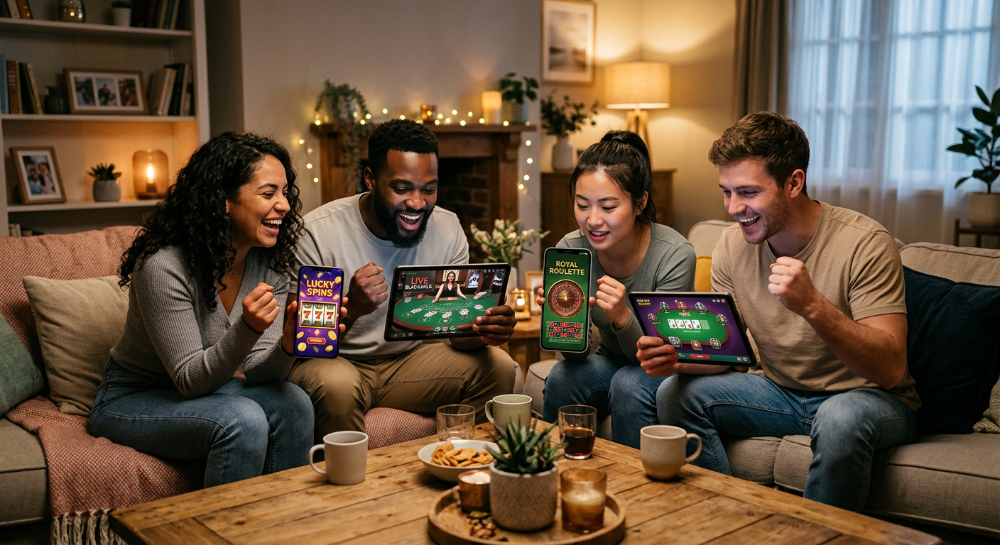
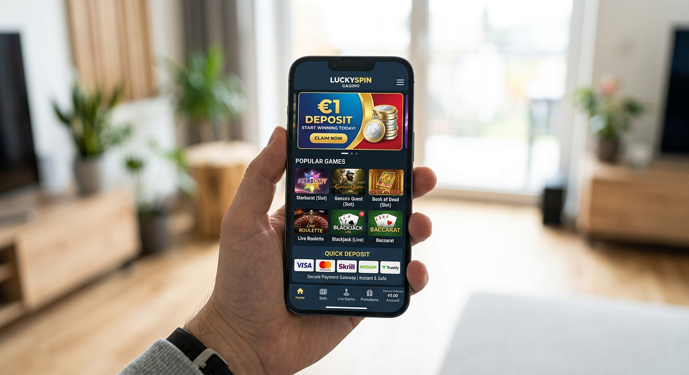
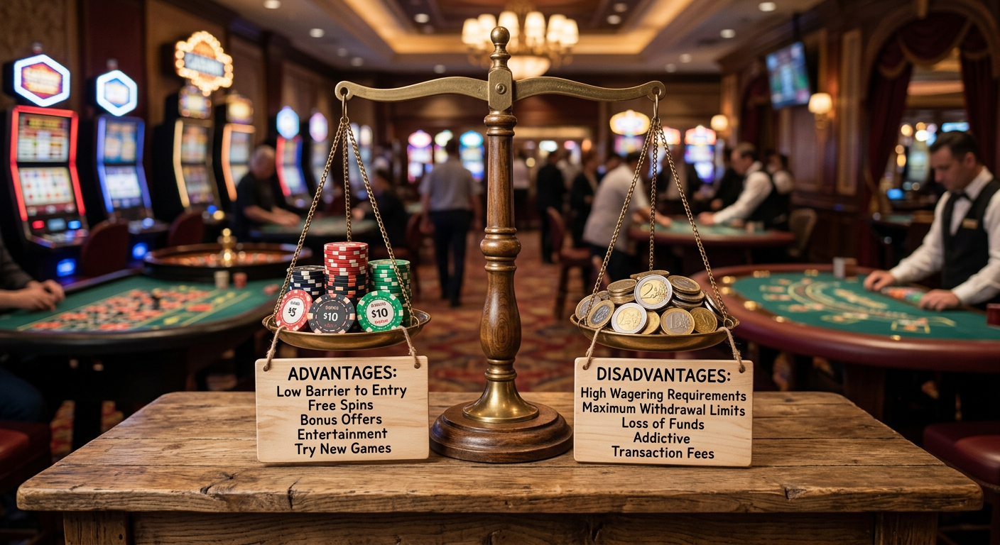
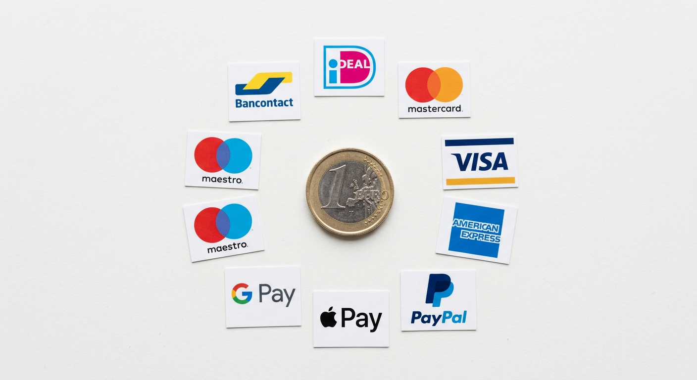

1 Euro Deposit Casino Nederland: De Beste Goksites met een Minimale Inzet in 2026
De wereld van online kansspelen in Nederland is in 2026 volwassen geworden. Waar spelers voorheen vaak tientallen euro's moesten overmaken om een gokje te kunnen wagen, is de drempel nu lager dan ooit. Een 1 euro deposit casino biedt de perfecte uitkomst voor spelers die met een minimaal risico de spanning van het casino willen ervaren. Of je nu een beginner bent die de interface van een platform wil verkennen of een ervaren rot die simpelweg wat tijd wil doden, deze platforms zijn essentieel voor de huidige markt.
In dit uitgebreide artikel duiken we diep in de wereld van kleine stortingen. We bekijken welke aanbieders in 2026 de beste voorwaarden bieden en hoe je met een enkele euro toch kans maakt op mooie prijzen. De focus ligt hierbij op veiligheid, betrouwbaarheid en natuurlijk het spelplezier dat je kunt beleven bij een 1 euro deposit casino in het huidige jaar.
Wat is een online casino met een storting vanaf 1 euro?
Een online gokplatform dat stortingen vanaf één euro accepteert, is een unieke niche binnen de iGaming-industrie. In 2026 zien we dat steeds meer aanbieders deze optie aanbieden om de toegankelijkheid te vergroten. Het concept is simpel: in plaats van de gebruikelijke €10 of €20, kun je hier met een symbolisch bedrag van €1 aan de slag. Dit maakt het voor iedereen mogelijk om deel te nemen aan de digitale gokwereld.
Het is belangrijk om te begrijpen dat een 1 euro deposit casino niet betekent dat de kwaliteit van het aanbod lager is. Integendeel, vaak maken deze sites gebruik van dezelfde hoogwaardige software als de grote jongens. Bedrijven zoals Entain hebben de afgelopen jaren flink geïnvesteerd om hun platforms ook voor kleine transacties efficiënt te maken. Het gaat hierbij om een drempelverlagende strategie die vooral in de Nederlandse markt zeer gewaardeerd wordt.
Deze vorm van gokken is ook een uitstekende manier om een nieuwe online casino te testen zonder direct een groot kapitaal op het spel te zetten. Je kunt de laadtijden van de games controleren, de klantenservice aanspreken en kijken of de uitbetalingen soepel verlopen. In 2026 is de techniek achter de betaalverwerking zo verfijnd dat zelfs een minimale transactie van een euro veilig en snel kan worden afgehandeld.
Waarom kiezen spelers voor gokken met kleine bedragen?

Er zijn diverse redenen waarom de populariteit van een 1 euro deposit casino in 2026 naar recordhoogte is gestegen. Ten eerste is er het aspect van verantwoord spelen. Door slechts een euro te storten, behoud je de volledige controle over je uitgaven. Je kunt de sensatie van het winnen ervaren zonder dat een eventueel verlies invloed heeft op je dagelijkse financiën. Dit sluit nauw aan bij de strengere richtlijnen die de overheid de afgelopen jaren heeft ingevoerd.
Daarnaast is de nieuwsgierigheid een grote factor. Veel spelers willen graag weten hoe een platform zoals Tonybet of Winz in de praktijk werkt. Met een kleine inleg kun je de gebruikersinterface verkennen en zien of de spellen van bijvoorbeeld Evolution soepel draaien op je mobiele apparaat. Het is in feite een goedkope 'testrit' door de digitale lobby van een aanbieder.
Ten slotte is er de hoop op die ene grote klapper. Hoewel de kans klein is, zijn er talloze verhalen van spelers die met een minimale inzet een flinke prijs wonnen op een progressieve jackpot gokkast. In een 1 euro deposit casino is de droom van een grote winst met een kleine inleg nog steeds springlevend, zeker nu de RTP-percentages in 2026 transparanter zijn dan ooit tevoren.
Top Nederlandse aanbieders met een €1 limiet in 2026

In 2026 is de lijst met kwalitatieve aanbieders die een lage instap bieden flink gegroeid. We zien bekende namen en opkomende sterren die strijden om de gunst van de Nederlandse speler. Een van de absolute koplopers is Goldbet, een platform dat bekend staat om zijn gebruiksvriendelijke interface en snelle verwerking van kleine transacties. Zij begrijpen dat de moderne speler flexibiliteit eist.
Ook Newlucky heeft in 2026 een sterke positie ingenomen door een specifiek aanbod te creëren voor spelers die met een 1 euro deposit casino ervaring willen beginnen. Hun aanbod aan slots is indrukwekkend, met titels die perfect aansluiten bij lage inzetten. Voor wie op zoek is naar een wat meer avontuurlijke setting, is Dragobet een uitstekende keuze. Hier vind je een unieke sfeer gecombineerd met de mogelijkheid om met een minimale storting te spelen.
Andere noemenswaardige platforms zijn Fortunicabet en Spinorhino. Beide sites hebben zich gespecialiseerd in het aanbieden van een naadloze mobiele ervaring, wat cruciaal is voor spelers die onderweg even snel een euro willen storten. Vergeet ook niet Lizaro en Hidden Jack, die in 2026 hun systemen hebben geoptimaliseerd voor directe iDEAL-stortingen van kleine bedragen.
Jack's Casino en de mogelijkheden
Jacks.nl is al jaren een gevestigde naam in Nederland en in 2026 blijven ze vernieuwen. Hoewel ze traditioneel hogere limieten hanteerden, hebben ze onder druk van de markt hun drempels verlaagd voor specifieke promoties. Het platform van Jack's biedt een veilige haven voor spelers die waarde hechten aan een Nederlandse licentie en een uitstekende klantenservice. Ze laten zien dat zelfs de grote spelers de waarde van een lage instap inzien.
Bij Jack's kun je rekenen op een professionele omgeving waar verantwoord spelen centraal staat. Hun samenwerking met providers zoals Kambi voor de sportsbook sectie zorgt ervoor dat je zelfs met een klein budget kunt inzetten op je favoriete voetbalwedstrijden. Dit maakt de ervaring compleet voor de allround gokker.
TOTO en GGPoker: Lage drempels voor spelers
De Nederlandse markt zou niet hetzelfde zijn zonder de invloed van TOTO. In 2026 heeft TOTO haar aanbod verder verfijnd, waarbij de minimale storting voor veel spelers toegankelijker is geworden. Vooral in de sectie voor sportweddenschappen is het eenvoudig om met een klein bedrag deel te nemen aan de actie. Dit trekt een breed publiek aan dat voor de gezelligheid een euro inzet op de Eredivisie.
Aan de andere kant van het spectrum hebben we GGPoker, dat in 2026 nog steeds de koning van de online pokerwereld is. Voor nieuwe spelers bieden zij satelliettoernooien aan met een extreem lage buy-in. Hoewel een directe 1 euro deposit casino ervaring hier anders is vormgegeven, kun je met een minimale overboeking vaak al deelnemen aan kwalificatietoernooien voor de grote events. Dit toont aan dat de trend van lage drempels overal in de industrie zichtbaar is.
Hoe wij de betrouwbaarheid van deze goksites testen

Het beoordelen van een 1 euro deposit casino vereist een grondige aanpak. In 2026 is de lat voor online casino's in Nederland erg hoog gelegd door de Kansspelautoriteit (KSA). Ons team van experts test elk platform op meerdere kritieke punten voordat we een aanbeveling doen. Veiligheid staat hierbij altijd op de eerste plaats. We controleren of het casino beschikt over de juiste licenties en of de dataverbindingen versleuteld zijn met de nieuwste SSL-technologieën.
Daarnaast kijken we naar de eerlijkheid van de spellen. Een betrouwbaar casino maakt gebruik van Random Number Generators (RNG) die regelmatig worden geaudit door onafhankelijke instanties. We letten specifiek op de aanwezigheid van top-tier providers zoals Pragmatic Play en Stakelogic, aangezien hun spellen bekend staan om hun eerlijkheid en transparantie. Als deze namen aanwezig zijn, is dat vaak een goed teken voor de speler.
De snelheid en eerlijkheid van de uitbetalingen zijn eveneens cruciaal. Zelfs als je slechts een euro hebt gestort, heb je recht op een snelle afhandeling van je winsten. We testen dit proces door zelf stortingen te doen en vervolgens te kijken hoe lang het duurt voordat een opname op onze rekening staat. In 2026 verwachten we dat dit proces binnen enkele uren, zo niet direct, voltooid is.
De voor- en nadelen van een 1 euro deposit casino

Zoals elke vorm van entertainment, heeft ook het spelen bij een 1 euro deposit casino zowel positieve als negatieve kanten. Het is belangrijk om hier een eerlijk beeld van te hebben voordat je besluit ergens geld te storten. Hieronder vind je een overzichtelijke tabel met de belangrijkste punten om rekening mee te houden in 2026.
| Voordelen | Nadelen |
|---|---|
| Minimaal financieel risico voor de speler. | Vaak geen toegang tot de volledige welkomstbonus. |
| Ideaal om een nieuw platform te verkennen. | Transactiekosten kunnen relatief hoog zijn voor het casino. |
| Toegang tot echte geldspellen voor slechts €1. | Beperkt aantal betaalmethoden beschikbaar voor dit bedrag. |
| Bevordert verantwoord gokgedrag. | Sommige live casino spellen hebben hogere minimum inzetten. |
Voordelen: Laag risico en toegankelijkheid
Het grootste voordeel van een 1 euro deposit casino is ongetwijfeld het lage risico. In een tijd waarin we bewuster omgaan met onze uitgaven, biedt dit type casino een veilige manier om te ontspannen. Je kunt urenlang plezier beleven aan gokkasten met een inzet van slechts 1 of 2 cent per draai. Hierdoor gaat je euro verrassend lang mee en heb je toch kans op de opwinding van een winnende combinatie.
De toegankelijkheid is een ander sterk punt. Iedereen met een bankrekening en een euro kan deelnemen. Dit democratiseert de gokwereld en zorgt ervoor dat het geen exclusieve club meer is voor de rijken. Of je nu Hard Rock Casino games wilt proberen of liever een gokje waagt op een klassieke fruitautomaat, de drempel is in 2026 nagenoeg verdwenen.
Nadelen: Transactiekosten en beperkte bonussen
Er zijn echter ook beperkingen. Veel casino's hanteren bonussen die pas geactiveerd worden bij een storting van €10 of €20. Als je voor een 1 euro deposit casino kiest, loop je dus vaak de traditionele 100% match bonus mis. Gelukkig zijn er in 2026 steeds meer aanbieders die speciale 'micro-bonussen' aanbieden voor de kleine storters, zoals een handvol free spins bij aanmelding.
Een ander punt is de winstgevendheid voor het casino zelf. Transactiekosten voor iDEAL of creditcards kunnen soms bijna even hoog zijn als de storting van een euro. Daarom zie je dat sommige platforms deze optie alleen aanbieden via specifieke betaalmethoden die goedkoper zijn voor de operator. Dit kan de keuzevrijheid voor de speler soms ietwat beperken.
Beschikbare betaalmethoden voor minimale stortingen

In 2026 is het landschap van online betalingen in Nederland sterk geëvolueerd. Voor een 1 euro deposit casino zijn er specifieke methoden die de voorkeur genieten. De techniek moet namelijk in staat zijn om zeer kleine bedragen te verwerken zonder dat de kosten de pan uit rijzen. We zien dat de integratie tussen banken en casino's nog nooit zo strak is geweest als in dit jaar.
Het is interessant om te zien hoe innovaties zoals 'Open Banking' hebben bijgedragen aan de groei van kleine stortingen. Spelers willen niet alleen een laag bedrag storten, ze willen ook dat dit direct zichtbaar is in hun account. Wachten op je speelgeld is in 2026 echt verleden tijd. De snelheid van de transactie is een van de belangrijkste factoren geworden voor de waardering van een een online casino.
iDEAL: De standaard in Nederland
iDEAL blijft ook in 2026 de onbetwiste koning van de Nederlandse betaalmarkt. Vrijwel elk 1 euro deposit casino dat zich op Nederland richt, biedt iDEAL aan. Het is veilig, vertrouwd en direct gekoppeld aan je eigen bankomgeving. Dankzij updates in het iDEAL-protocol zijn de transactiekosten voor casino's gedaald, waardoor zij vaker de minimale storting van een euro kunnen accepteren zonder verlies te draaien.
Wanneer je iDEAL gebruikt, wordt je identiteit vaak ook direct geverifieerd (iDIN), wat het registratieproces bij een een euro casino aanzienlijk versnelt. Dit gemak is precies wat de moderne Nederlandse consument zoekt: snelheid, veiligheid en eenvoud in één klik.
E-wallets en alternatieve opties
Naast iDEAL zijn e-wallets zoals PayPal, Skrill en Neteller nog steeds populair in 2026. Echter, we zien een verschuiving waarbij spelers steeds vaker kiezen voor mobiele betaaloplossingen zoals Apple Pay en Google Pay. Deze methoden zijn uitermate geschikt voor een 1 euro deposit casino omdat ze biometrisch beveiligd zijn en razendsnel werken op smartphones.
Sommige platforms, zoals LeoVegas, hebben hun systemen zo ingericht dat deze mobiele betalingen naadloos integreren met hun app. Dit zorgt voor een superieure gebruikerservaring. Ook prepaidkaarten zoals Paysafecard worden nog gebruikt, hoewel de populariteit daarvan iets is afgenomen ten gunste van de directe bankkoppelingen.
Welke casino bonussen kun je claimen met €1?
Het claimen van een bonus met slechts één euro is in 2026 een kunst op zich. Hoewel veel grote bonussen aan je neus voorbijgaan, zijn er slimme manieren om toch extra waarde uit je euro te halen. Sommige innovatieve sites bieden namelijk 'stort 1, krijg 20' promoties aan om nieuwe spelers te trekken. Dit is een agressieve maar effectieve manier om een grote database aan spelers op te bouwen.
Het is cruciaal om altijd de kleine lettertjes te lezen. Een bonus bij een 1 euro deposit casino heeft vaak strengere rondspeelvoorwaarden dan een reguliere bonus. In 2026 is de transparantie hierover gelukkig verbeterd dankzij strengere regelgeving van de KSA. Je weet precies waar je aan toe bent voordat je die euro overmaakt.
Free spins bij aanmelding
De meest voorkomende bonus voor de kleine storter zijn de free spins. Je stort een euro en ontvangt bijvoorbeeld 10 of 20 spins op een populaire gokkast zoals die van Pragmatic Play. Dit is een uitstekende manier om kennis te maken met het spelaanbod. In 2026 zien we dat casino's deze spins vaak weggeven op gokkasten met een hoge entertainmentwaarde, zodat spelers een positieve eerste indruk krijgen.
Spelers bij Betnation of One Casino maken vaak gebruik van dit soort acties. Het geeft je de kans om echt geld te winnen zonder dat je zelf een grote investering hoeft te doen. Let er wel op dat er vaak een limiet zit aan het bedrag dat je maximaal kunt laten uitbetalen met winsten uit gratis spins.
Welkomstbonussen voor kleine budgetten
In 2026 zijn er ook specifieke welkomstbonussen voor de 'low rollers'. Denk aan een verdubbeling van je euro of een kleine cashback garantie. Platforms zoals GetLucky en Starcasino hebben zich gespecialiseerd in dit segment. Zij begrijpen dat niet iedereen honderden euro's te besteden heeft en passen hun marketing daarop aan.
Deze bonussen zijn vaak bedoeld om loyaliteit op te bouwen. Het casino hoopt dat je, nadat je een fijne ervaring hebt gehad met je eerste euro, vaker terugkomt. Het is een win-win situatie: jij speelt met extra budget en het casino wint een nieuwe klant voor de lange termijn.
Stappenplan: Zo begin je met spelen voor één euro
Wil je vandaag nog aan de slag bij een 1 euro deposit casino? Volg dan dit eenvoudige stappenplan om veilig en snel te beginnen in 2026:
- Kies een betrouwbaar casino: Gebruik onze lijst met aanbevolen sites zoals Goldbet of Newlucky. Zorg dat ze een geldige KSA-licentie hebben.
- Maak een account aan: Vul je gegevens eerlijk in. In 2026 verloopt dit vaak razendsnel via iDIN-verificatie.
- Ga naar de kassa: Selecteer de optie 'Storten' en kies je gewenste betaalmethode (bijv. iDEAL).
- Voer het bedrag in: Vul '1' in bij het bedrag. Let op of er een bonuscode nodig is om eventuele promoties te activeren.
- Bevestig de transactie: Rond de betaling af via je bank-app. Het geld staat direct in je casino-account.
- Kies je spel: Zoek een gokkast met een lage minimale inzet en begin met spelen!
Dit proces duurt in 2026 meestal niet langer dan twee minuten. De focus op efficiëntie heeft ervoor gezorgd dat de drempel om te beginnen lager is dan ooit. Het is een fluitje van een cent om je een euro deposit avontuur te starten.
Spelaanbod: Welke games kun je spelen met een klein budget?
Met een saldo van slechts één euro denk je misschien dat je keuze beperkt is, maar niets is minder waar in 2026. Moderne gokkasten van providers als Evolution en Stakelogic laten je al draaien vanaf €0,01 per lijn. Dit betekent dat je met een euro maar liefst 100 keer kunt spinnen als je op een enkele lijn speelt, of 10 keer bij een inzet van 10 cent. Dat is een hoop entertainment voor een zeer klein bedrag.
Naast slots kun je vaak ook terecht bij geautomatiseerde tafelspellen zoals Roulette of Blackjack. De minimale inzet is hier vaak iets hoger, bijvoorbeeld €0,10 of €0,20, maar zelfs dan kun je met een euro nog steeds een aantal rondes meespelen. Dit maakt een 1 euro deposit casino ook interessant voor fans van strategie-gebaseerde spellen.
In het live casino segment is het iets uitdagender. Veel live tafels van Evolution hebben een minimum inzet van €0,50 of €1. Met een storting van een euro kun je hier dus vaak maar één of twee keer inzetten. Echter, er zijn speciale 'game shows' zoals Crazy Time of Monopoly Live waar je soms al vanaf 10 cent kunt deelnemen, wat perfect past bij een klein budget.
Verantwoord spelen en limieten instellen
Ondanks dat je bij een 1 euro deposit casino met kleine bedragen speelt, blijft verantwoord spelen essentieel. In 2026 is de Nederlandse wetgeving hierin zeer strikt. Elk casino is verplicht om tools aan te bieden waarmee je je eigen limieten kunt instellen. Dit geldt voor stortingslimieten, tijdslimieten en verlieslimieten.
Het feit dat je met een euro kunt spelen, is op zichzelf al een vorm van risicobeheersing. Het voorkomt dat je in een opwelling te veel geld uitgeeft. De overheid adviseert altijd om alleen te gokken met geld dat je kunt missen. Meer informatie over veilig gokken kun je vinden op de website van de Kansspelautoriteit, de toezichthouder op de Nederlandse markt.
Als je merkt dat je vaker wilt storten dan je je kunt veroorloven, is het belangrijk om aan de bel te trekken. De meeste platforms in 2026 hebben een directe link naar hulpinstanties. Onthoud: gokken moet een spelletje blijven, geen manier om geld te verdienen. Zelfs bij een een casino met lage limieten moet plezier altijd voorop staan.
Vergelijking tussen 1 euro deposit casino platforms en high rollers
Er is een groot verschil tussen de benadering van een 'low roller' en een 'high roller'. Terwijl de high roller op zoek is naar VIP-behandelingen en enorme cashbacks, zoekt de bezoeker van een 1 euro deposit casino vooral naar maximale entertainmentwaarde voor een minimale prijs. In 2026 zien we dat casino's beide doelgroepen proberen te bedienen door hun aanbod te segmenteren.
Een high roller zal zich sneller thuis voelen bij merken als BetMGM of Hard Rock Casino, waar de limieten vaak hoger liggen. Echter, ook deze grote merken hebben in 2026 ingezien dat de massa-markt juist in de kleinere bedragen zit. De technologische infrastructuur die nodig is om duizenden transacties van een euro te verwerken is indrukwekkend en toont de kracht van de moderne iGaming sector.
Het mooie van de huidige markt is dat je als speler niet meer hoeft te kiezen. Je kunt de ene dag een euro storten bij Dragobet om een nieuwe slot te proberen, en de andere dag besluiten om wat groter in te zetten bij een ander platform. Die vrijheid is een van de grootste verworvenheden van de gereguleerde Nederlandse markt in 2026.
De rol van softwareproviders bij lage inzetten
Softwareproviders spelen een cruciale rol in het succes van een 1 euro deposit casino. Zij zijn degenen die de inzetlimieten van de spellen bepalen. Providers zoals Pragmatic Play hebben dit goed begrepen en maken games die zowel voor de kleine speler als de grote gokker aantrekkelijk zijn. De volatiliteit van hun spellen zorgt ervoor dat je zelfs met een kleine inzet kans maakt op een vermenigvuldiger van duizenden keren je inleg.
Ook Stakelogic, een provider met sterke Nederlandse roots, heeft in 2026 veel spellen in het assortiment die perfect zijn voor een kleine een storting. Hun klassieke fruitautomaten in een modern jasje zijn zeer populair onder Nederlandse spelers. De mogelijkheid om met een paar cent te spelen op games die er visueel prachtig uitzien, is een grote trekpleister.
Daarnaast zien we de invloed van bedrijven zoals Entain, die niet alleen spellen maken maar ook de platforms beheren. Zij zorgen ervoor dat de backend van een euro casino de enorme hoeveelheid kleine transacties aankan zonder dat het systeem traag wordt. De synergie tussen software en hardware is in 2026 tot in de puntjes geperfectioneerd.
Mobiel gokken bij een 1 euro deposit casino
In 2026 wordt meer dan 80% van de online kansspelen in Nederland via de mobiele telefoon gespeeld. Dit heeft een enorme impact op hoe een 1 euro deposit casino is ontworpen. De apps moeten razendsnel zijn en de betaalmethoden moeten perfect integreren met mobiele bank-apps. Het is tegenwoordig een kwestie van een paar tikken op je scherm om een euro te storten en direct te beginnen met draaien.
Aanbieders zoals Fortunicabet en Spinorhino hebben hun websites volledig 'mobile-first' ontwikkeld. Dit betekent dat de ervaring op een smartphone vaak zelfs beter is dan op een desktop. De navigatie is intuïtief en de spellen passen zich automatisch aan het formaat van je scherm aan. Voor de speler die in de trein of tijdens de lunchpauze even wil ontspannen met een een euro casino ervaring, is dit ideaal.
Bovendien bieden veel casino's in 2026 specifieke mobiele bonussen aan. Je krijgt dan bijvoorbeeld extra spins als je via hun app een storting van een euro doet. Dit stimuleert het gebruik van mobiele platforms en verhoogt de betrokkenheid van de speler.
De evolutie van de Nederlandse gokmarkt in 2026
De Nederlandse gokmarkt heeft sinds de legalisering in 2021 een enorme transformatie ondergaan. In 2026 zien we dat de markt verzadigd raakt met kwalitatieve aanbieders, wat resulteert in betere voorwaarden voor de consument. De opkomst van het 1 euro deposit casino is een direct gevolg van deze concurrentiestrijd. Casino's moeten innovatief zijn om op te vallen en een lage instap is een van de meest effectieve middelen.
Ook de regelgeving is meegegroeid. Er is in 2026 meer aandacht voor de bescherming van de speler, maar er is ook ruimte voor commerciële creativiteit binnen de kaders van de wet. Dit evenwicht zorgt ervoor dat Nederland een van de veiligste en meest aantrekkelijke markten ter wereld is voor online gokken. Merken als Hommerson en Lucky 7 Casino zijn inmiddels vaste waarden geworden in dit landschap.
De integratie van AI in 2026 helpt casino's bovendien om spelgedrag beter te monitoren. Zelfs als je slechts een een euro deposit doet, kan het systeem zien of je patronen vertoont die kunnen duiden op problematisch gedrag. Deze proactieve aanpak zorgt ervoor dat gokken in Nederland een verantwoorde vorm van vrijetijdsbesteding blijft.
Klantenservice bij goksites met lage limieten
Je zou misschien denken dat een casino dat stortingen vanaf een euro accepteert, bespaart op de klantenservice. Niets is minder waar in 2026. Een professioneel 1 euro deposit casino zoals Lizaro of Hidden Jack biedt 24/7 ondersteuning via live chat, mail en vaak zelfs telefoon. Zij begrijpen dat elke speler, ongeacht het budget, een koning is.
Wanneer je een vraag hebt over je storting of een spel dat niet goed laadt, wil je direct geholpen worden. In 2026 is de wachttijd voor een live chat zelden langer dan een minuut. De medewerkers spreken bovendien vloeiend Nederlands, wat de communicatie een stuk makkelijker maakt. Dit niveau van service is wat een top-casino onderscheidt van de grijze middenmoot.
Bovendien zie je in 2026 steeds vaker 'chatbots' die de eerste eenvoudige vragen afhandelen. Dit zorgt ervoor dat de menselijke agenten meer tijd hebben voor complexe zaken. Of je nu bij Tombola speelt voor de bingo of bij Betnation voor de slots, de ondersteuning is tegenwoordig van wereldklasse.
Hoe iDEAL de 1 euro deposit casino markt domineert
Het is onmogelijk om over de Nederlandse markt te praten zonder iDEAL te noemen. In 2026 is de dominantie van dit betaalsysteem alleen maar toegenomen. Voor een 1 euro deposit casino is iDEAL de ideale partner omdat het de transactiekosten voor de operator laag houdt. Hierdoor kunnen zij het zich veroorloven om dergelijke kleine stortingen aan te bieden zonder zelf geld toe te leggen.
Bovendien biedt iDEAL 2.0, dat in 2026 de standaard is, nog meer gemak voor de consument. Je kunt sneller betalen zonder telkens je QR-code te hoeven scannen, mits je daarvoor toestemming hebt gegeven in je bank-app. Deze efficiëntie is de motor achter de groei van bij een casino met lage instapdrempels.
Andere methoden zoals creditcards (Visa/Mastercard) worden natuurlijk ook nog geaccepteerd, maar zij leggen het vaak af tegen het gemak en de veiligheid van iDEAL. Voor de speler betekent dit dat je altijd een betrouwbare manier hebt om die ene euro op je account te krijgen.
Bonusvoorwaarden bij een euro stortingen
We hebben het al kort aangestipt, maar de bonusvoorwaarden verdienen in 2026 extra aandacht. Bij een 1 euro deposit casino zijn de regels vaak net even anders. Een veelvoorkomende voorwaarde is de 'maximum winst'. Dit betekent dat je bijvoorbeeld maximaal €50 of €100 kunt laten uitbetalen als je winst maakt met een bonus die je met een euro hebt geactiveerd.
Daarnaast is er de 'wagering requirement' of rondspeelvoorwaarde. In 2026 ligt dit gemiddeld tussen de 30x en 40x. Dit betekent dat je de waarde van je bonus een aantal keer moet inzetten voordat het saldo wordt omgezet in echt geld. Het is een eerlijk systeem dat ervoor zorgt dat casino's niet direct failliet gaan aan gulle weggeefacties, terwijl de speler toch een kans heeft op een mooie extra.
Het is ook goed om te kijken naar welke spellen bijdragen aan het rondspelen. Vaak tellen gokkasten voor 100% mee, terwijl het live casino of tafelspellen slechts voor 10% of 20% bijdragen. Lees dus altijd de algemene voorwaarden op sites als Lucky 7 Casino of BetMGM voordat je een bonus accepteert.
Alternatieven voor het 1 euro deposit casino
Als je merkt dat een storting van een euro je net niet genoeg speeltijd geeft, zijn er gelukkig genoeg alternatieven in 2026. Veel platforms bieden ook stortingen aan vanaf €5 of €10. Dit geeft je vaak toegang tot betere welkomstbonussen en meer spins. Het is een natuurlijke stap omhoog voor spelers die iets meer budget hebben maar nog steeds voorzichtig willen zijn.
Daarnaast zijn er de 'no deposit' bonussen. In 2026 zie je dit minder vaak vanwege de strenge regelgeving, maar sommige casino's geven je toch een klein bedrag aan speelgeld alleen voor het verifiëren van je account. Dit is de ultieme manier om zonder enig risico te beginnen. Echter, de voorwaarden bij een 1 euro deposit casino zijn vaak gunstiger dan bij een volledig gratis bonus.
Voor de echte liefhebbers zijn er ook specifieke crypto-casino's die buiten de Nederlandse licentie opereren, maar wij raden altijd aan om te kiezen voor een aanbieder met een Nederlandse vergunning. Veiligheid en spelersbescherming zijn immers onbetaalbaar. Kijk liever naar een betrouwbaar merk zoals Hommerson of Jacks.nl voor een veilige ervaring.
Toekomstverwachtingen voor de Nederlandse markt
Wat brengt de toekomst na 2026? De trend van lagere stortingen zal waarschijnlijk doorzetten. We verwachten dat technologische innovaties de kosten voor transacties nog verder zullen verlagen, waardoor een 1 euro deposit casino de standaard wordt in plaats van de uitzondering. Misschien zien we in de nabije toekomst zelfs stortingen vanaf 10 of 20 cent mogelijk worden.
Daarnaast zal de integratie van Virtual Reality (VR) in 2026 en daarna een grote vlucht nemen. Stel je voor dat je voor een euro een virtueel casino binnenstapt waar je kunt rondlopen en interactie kunt hebben met andere spelers. De mogelijkheden zijn eindeloos. Bedrijven zoals Evolution zijn hier achter de schermen al druk mee bezig.
Ook de sociale component van gokken zal belangrijker worden. We verwachten meer 'multiplayer' slots waarbij je samen met vrienden een euro kunt inzetten om gezamenlijk een bonusronde te bereiken. De gokwereld blijft zich vernieuwen en de Nederlandse speler plukt daar de vruchten van.
Veelgestelde vragen over €1 storten bij online casino's
In dit gedeelte beantwoorden we de meest gestelde vragen die we in 2026 tegenkomen over dit onderwerp. Dit helpt je om snel de informatie te vinden die je nodig hebt voor je minimale storting van een euro.
Kan ik echt geld winnen met een storting van 1 euro?
Ja, absoluut! Elke inzet die je plaatst met echt geld, hoe klein ook, kan resulteren in een uitbetaling. Er zijn gevallen bekend van spelers die met een minimale inzet een enorme prijs wonnen op een progressieve jackpot gokkast.
Zijn er extra kosten verbonden aan kleine stortingen?
In de meeste gevallen niet voor de speler. Het casino neemt de transactiekosten meestal voor eigen rekening. Echter, sommige een euro deposit platforms kunnen een kleine fee vragen bij specifieke betaalmethoden, maar dit moet altijd duidelijk worden aangegeven.
Welke spellen zijn het beste voor een budget van 1 euro?
Gokkasten met een lage minimale inzet (low volatility slots) zijn ideaal. Hierdoor kun je vaker draaien en heb je meer kans op kleine, regelmatige winsten die je saldo in stand houden. Ook game shows in het live casino zijn een goede optie.
Heeft elk Nederlands casino deze optie in 2026?
Nee, niet elk casino biedt dit aan. Veel grotere merken houden vast aan een minimum van €10 of €20. Je moet specifiek zoeken naar een 1 euro deposit casino om met dit bedrag aan de slag te kunnen gaan.
Concluderend kunnen we stellen dat het spelen bij een 1 euro deposit casino in 2026 een fantastische manier is om de online gokwereld te ontdekken. Het biedt een veilige, laagdrempelige en vooral leuke ervaring voor iedere Nederlander. Vergeet niet om altijd verantwoord te spelen en te genieten van de innovaties die de markt te bieden heeft. Meer informatie over de geschiedenis en de achtergrond van kansspelen kun je vinden op Wikipedia.

Expert in online casino's en digitaal gokken met meer dan 8 jaar ervaring in de sector.